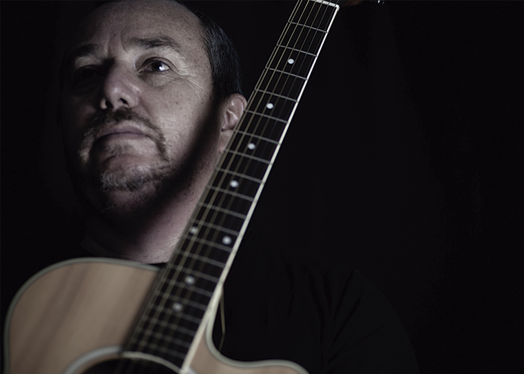

Hola, me llamo Rodrigo Villegas
Quién soy
Ingeniero en Sonido con Diplomado en Gestión de Marketing. Desarrollador de Producciones Audiovisuales y diseño
gráfico. Editor de video y audio utilizando toda plataforma de Adobe CC. Estrecha interacción con proveedores y
productoras de eventos. Actualmente realizando cursos de Fotografía y diplomado Adobe Creative Cloud para certificación
de Adobe.
Mis principales datos personales
- Mi nombre: Rodrigo Villegas Muñoz
- Donde nací: Viña del Mar
- Cuándo nací: 5 de Septiembre de 1973
- Sígueme en instagram: @7acuerda
Mi formación académica
Academia DGM:
-
Actualmente cursando diplomado audiovisual para certificación de Adobe.
-
Desarrollo curso de 160 horas Master After Effects. Noviembre 2020
Universidad de Chile:
-
Diplomado Gestión de Marketing, Universidad de Chile · (2008 - 2008)
Universidad Tecnológica Vicente Pérez Rosales (VIPRO):
-
Ingeniero de Ejecución en Sonido · (1992 - 1997)
Donde he trabajado y trabajo actualmente
-
Independiente (7acuerda SpA / 7acuerda.cl ) / 2013
- presente
Formación de microempresa 7acuerda SpA para realizaciones audiovisuales. Diseño gráfico, Sonido, Video,
Postproducción de Audio y Video. Desarrollo de Video Curriculums.
-
IMV Ingeniería Equipos Médicos / mayo 2019 - noviembre 2020
Encargado de Marketing. Gestión de proveedores audiovisuales y gráficos. Web máster y actualización de
contenidos. Redes sociales, ferias y eventos.
-
Green Land Tours Tour Operador / marzo 2015 - abril 2019
Desarrollo imagen gráfica actual y realizador de página web. Encargado del departamento de Marketing. Apoyo
constante a la Gerencia General, área comercial, departamento de Asia y Europa, América y el Caribe. Apoyo a
grupos de viaje. Gestor de Contenidos plataforma Juniper para web. Soporte constante con Juniper España.
Conocimiento de esta plataforma de venta Online y reservas de hoteles y aéreo. Gestión de Proveedores.
-
Consorcio Seguros / septiembre 1999 - febrero 2015
Experto en presentaciones / Eventos audiovisuales, desarrollo gráfico computacional, editor de audio y
video, desarrollo web.
Responsable de eventos audiovisuales, diseño gráfico interno, encargado de diseño/envío de emails
corporativos empresa, administrador herramienta Masterbase, Comunicaciones internas con perfil comercial,
manejo de proveedores.
Universidad Tecnológica Inacap Sur / Vespertino: marzo 2009 - julio 2011
Docente para la carrera de Diseño y Programación Multimedia para el ramo Vespertino: Edición de Vídeo y Sonido
Digital.